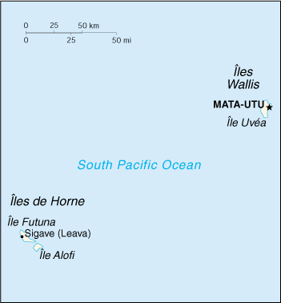

{kind=link}


| Wallis and Futuna |
|
|  | |
| Introduction |
Background: Although discovered by the Dutch and the British in the 17th and 18th centuries, it was the French who declared a protectorate over the islands in 1842. In 1959, the inhabitants of the islands voted to become a French overseas territory.
| Geography |
Location: Oceania, islands in the South Pacific Ocean, about two-thirds of the way from Hawaii to New Zealand
Geographic coordinates: 13 18 S, 176 12 W
Map references: Oceania
Area:
total:
274 sq km
land:
274 sq km
water:
0 sq km
note:
includes Ile Uvea (Wallis Island), Ile Futuna (Futuna Island), Ile Alofi, and 20 islets
Area - comparative: 1.5 times the size of Washington, DC
Land boundaries: 0 km
Coastline: 129 km
Maritime claims:
exclusive economic zone:
200 nm
territorial sea:
12 nm
Climate: tropical; hot, rainy season (November to April); cool, dry season (May to October); rains 2,500-3,000 mm per year (80% humidity); average temperature 26.6 degrees C
Terrain: volcanic origin; low hills
Elevation extremes:
lowest point:
Pacific Ocean 0 m
highest point:
Mont Singavi 765 m
Natural resources: NEGL
Land use:
arable land:
5%
permanent crops:
20%
permanent pastures:
0%
forests and woodland:
0%
other:
75% (1993 est.)
Irrigated land: NA sq km
Natural hazards: NA
Environment - current issues: deforestation (only small portions of the original forests remain) largely as a result of the continued use of wood as the main fuel source; as a consequence of cutting down the forests, the mountainous terrain of Futuna is particularly prone to erosion; there are no permanent settlements on Alofi because of the lack of natural fresh water resources
Geography - note: both island groups have fringing reefs
| People |
Population: 15,283 (July 2000 est.)
Age structure:
0-14 years:
NA
15-64 years:
NA
65 years and over:
NA
Population growth rate: NA%
Birth rate: NA births/1,000 population
Death rate: NA deaths/1,000 population
Net migration rate: NA migrant(s)/1,000 population
Infant mortality rate: NA deaths/1,000 live births
Life expectancy at birth:
total population:
NA years
male:
NA years
female:
NA years
Total fertility rate: NA children born/woman
Nationality:
noun:
Wallisian(s), Futunan(s), or Wallis and Futuna Islanders
adjective:
Wallisian, Futunan, or Wallis and Futuna Islander
Ethnic groups: Polynesian
Religions: Roman Catholic 100%
Languages: French, Wallisian (indigenous Polynesian language)
Literacy:
definition:
age 15 and over can read and write
total population:
50%
male:
50%
female:
50% (1969 est.)
| Government |
Country name:
conventional long form:
Territory of the Wallis and Futuna Islands
conventional short form:
Wallis and Futuna
local long form:
Territoire des Iles Wallis et Futuna
local short form:
Wallis et Futuna
Data code: WF
Dependency status: overseas territory of France
Government type: NA
Capital: Mata-Utu (on Ile Uvea)
Administrative divisions: none (overseas territory of France); there are no first-order administrative divisions as defined by the US Government, but there are three kingdoms named Wallis, Sigave, Alo
Independence: none (overseas territory of France)
Constitution: 28 September 1958 (French Constitution)
Legal system: French legal system
Suffrage: 18 years of age; universal
Executive branch:
chief of state:
President Jacques CHIRAC of France (since 17 May 1995), represented by High Administrator Christian DORS (since NA)
head of government:
President of the Territorial Assembly Soane UHILA (since NA)
cabinet:
Council of the Territory consists of three kings and three members appointed by the high administrator on the advice of the Territorial Assembly
note:
there are three traditional kings with limited powers
elections:
French president elected by popular vote for a seven-year term; high administrator appointed by the French president on the advice of the French Ministry of the Interior; the presidents of the Territorial Government and the Territorial Assembly are elected by the members of the assembly
Legislative branch:
unicameral Territorial Assembly or Assemblee Territoriale (20 seats; members are elected by popular vote to serve five-year terms)
elections:
last held 16 March 1997 (next to be held NA March 2002)
election results:
percent of vote by party - NA; seats by party - RPR 14, other 6
note:
Wallis and Futuna elects one senator to the French Senate and one deputy to the French National Assembly; French Senate - elections last held 27 September 1998 (next to be held by NA September 2007); results - percent of vote by party - NA; seats - RPR 1; French National Assembly - elections last held 25 May-1 June 1997 (next to be held by NA March 2002); results - percent of vote by party - NA; seats - RPR 1
Judicial branch: none; justice generally administered under French law by the high administrator, but the three traditional kings administer customary law and there is a magistrate in Mata-Utu
Political parties and leaders: Lua Kae Tahi (Giscardians) [leader NA]; Mouvement des Radicaux de Gauche or MRG [leader NA]; Rally for the Republic or RPR [leader NA]; Taumu'a Lelei [leader NA]; Union Populaire Locale or UPL [leader NA]; Union Pour la Democratie Francaise or UDF [leader NA]
International organization participation: FZ, SPC
Diplomatic representation in the US: none (overseas territory of France)
Diplomatic representation from the US: none (overseas territory of France)
Flag description: a large white modified Maltese cross centered on a red background; the flag of France outlined in white on two sides is in the upper hoist quadrant; the flag of France is used for official occasions
| Economy |
Economy - overview: The economy is limited to traditional subsistence agriculture, with about 80% of the labor force earning its livelihood from agriculture (coconuts and vegetables), livestock (mostly pigs), and fishing. About 4% of the population is employed in government. Revenues come from French Government subsidies, licensing of fishing rights to Japan and South Korea, import taxes, and remittances from expatriate workers in New Caledonia.
GDP: purchasing power parity - $28.7 million (1995 est.)
GDP - real growth rate: NA%
GDP - per capita: purchasing power parity - $2,000 (1995 est.)
GDP - composition by sector:
agriculture:
NA%
industry:
NA%
services:
NA%
Population below poverty line: NA%
Household income or consumption by percentage share:
lowest 10%:
NA%
highest 10%:
NA%
Inflation rate (consumer prices): NA%
Labor force: NA
Labor force - by occupation: agriculture, livestock, and fishing 80%, government 4% (est.)
Unemployment rate: NA%
Budget:
revenues:
$20 million
expenditures:
$17 million, including capital expenditures of $NA (1998 est.)
Industries: copra, handicrafts, fishing, lumber
Industrial production growth rate: NA%
Electricity - production: NA kWh
Electricity - production by source:
fossil fuel:
NA%
hydro:
NA%
nuclear:
NA%
other:
NA%
Electricity - consumption: NA kWh
Electricity - exports: NA kWh
Electricity - imports: NA kWh
Agriculture - products: breadfruit, yams, taro, bananas; pigs, goats
Exports: $370,000 (f.o.b., 1995 est.)
Exports - commodities: copra, breadfruit, yams, taro roots, handicrafts
Exports - partners: NA
Imports: $13.5 million (c.i.f., 1995 est.)
Imports - commodities: foodstuffs, manufactured goods, transportation equipment, fuel, clothing
Imports - partners: France, Australia, New Zealand
Debt - external: $NA
Economic aid - recipient: assistance from France
Currency: 1 Comptoirs Francais du Pacifique franc (CFPF) = 100 centimes
Exchange rates: Comptoirs Francais du Pacifique francs (CFPF) per US$1 - 117.67 (January 2000), 111.93 (1999), 107.25 (1998), 106.11 (1997), 93.00 (1996), 90.75 (1995); note - linked at the rate of 18.18 to the French franc
Fiscal year: calendar year
| Communications |
Telephones - main lines in use: 1,125 (1994)
Telephones - mobile cellular: 0 (1994)
Telephone system:
domestic:
NA
international:
NA
Radio broadcast stations: AM 1, FM 0, shortwave 0 (1998)
Radios: NA
Television broadcast stations: 2 (1997)
Televisions: NA
Internet Service Providers (ISPs): NA
| Transportation |
Railways: 0 km
Highways:
total:
120 km (Ile Uvea 100 km, Ile Futuna 20 km)
paved:
16 km (all on Ile Uvea)
unpaved:
104 km (Ile Uvea 84 km, Ile Futuna 20 km)
Waterways: none
Ports and harbors: Leava, Mata-Utu
Merchant marine:
total:
3 ships (1,000 GRT or over) totaling 92,060 GRT/45,881 DWT
ships by type:
passenger 2, petroleum tanker 1 (1999 est.)
Airports: 2 (1999 est.)
Airports - with paved runways:
total:
1
1,524 to 2,437 m:
1 (1999 est.)
Airports - with unpaved runways:
total:
1
914 to 1,523 m:
1 (1999 est.)
| Military |
Military - note: defense is the responsibility of France
| Transnational Issues |
Disputes - international: none